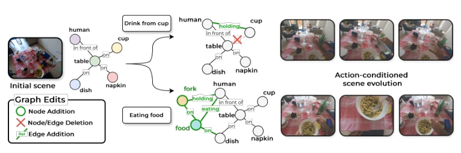
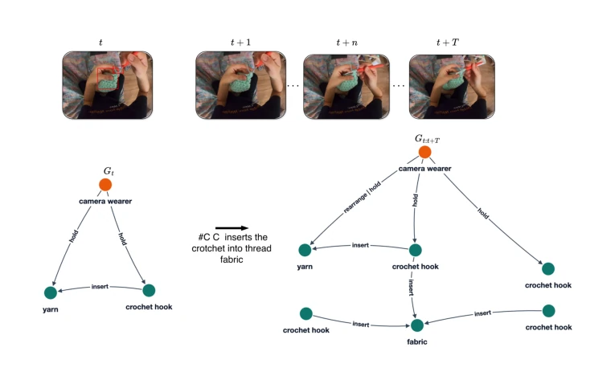
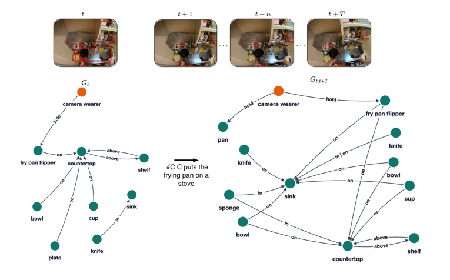
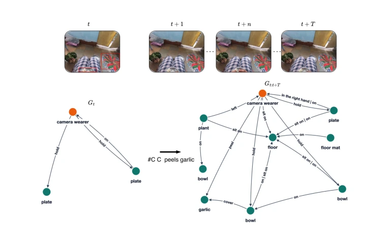
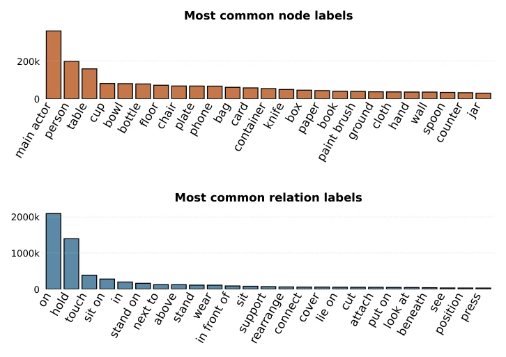

This paper attempts to perform 'surgery' on egocentric video understanding using scene graphs, replacing implicit visual features with explicit structured editing. The SG-Ego dataset is indeed large, with 3.8 million graphs, but relies on MLLM and detection models for automatic annotation. This 'training-free' pipeline, while convenient, carries significant risk of error accumulation. The GLEN model models scene evolution as graph editing, which sounds very compelling; it can explain 'why changes occur', but actual inference cost may be higher than directly running an MLLM. Experimentally, it performs well on EgoSchema and EXPLORE-Bench, even significantly outperforming some MLLMs, indicating that structured representations indeed have advantages in long-range reasoning. However, the generalization ability of this graph-editing-based prediction in complex dynamic environments still needs verification, after all, the real world is not simple node addition/deletion. Overall, this is an interesting attempt to turn 'black-box' video understanding into 'white-box' graph reasoning, suitable for embodied AI scenarios requiring interpretability, but still faces challenges in real-time performance and complex interaction modeling.
Embodied AI needs to understand how human activities reshape scenes, but existing methods mostly rely on implicit visual or language-aligned representations (e.g., [5], [6]), entangling objects, interactions, and temporal dynamics in a single embedding space, leading to difficulty in reasoning about the causes of scene changes. Although Scene Graph Generation (SGG) has existing research (e.g., [8], [9]), most are passive and do not consider the specific activities driving the changes. Scene Graph Prediction (e.g., [11], [12]) also relies only on past visual inputs, lacking human activity conditions, limiting controllability. This paper points out that the lack of explicit, editable structured representations makes attributing scene changes to specific actions difficult. Therefore, a representation that can explicitly model human-environment interaction is needed, transforming video understanding from passive feature extraction to activity-based explicit reasoning, thereby supporting more precise planning and prediction.

Figure 1: Reasoning over evolving scenes. Different activities induce structured changes in a scene over time. We formulate this process as activity-conditioned graph edit forecasting (A-GEF), where the temporal evolution of a scene is modeled as graph edits conditioned on an activity description.
The overall process is divided into data construction and model inference. First, construct the SG-Ego dataset, based on Ego4D [3], via a three-stage training-free pipeline: 1) MLLM extracts frame-level relation triplets; 2) GroundingDINO [39] performs visual grounding; 3) SAM2 [41] and DINOv2 [42] perform cross-frame tracking and graph merging, generating spatio-temporal scene graphs. The GLEN model includes a graph encoder, text encoder, and graph editing model. The core innovation is the Activity-driven Graph Editing Prediction (A-GEF) task, defining scene evolution as a sequence of graph edits based on action descriptions. GLEN takes initial graph Gt and action text actt as input, predicting the final graph Gt:T. Editing operations include node addition/deletion and edge addition/deletion, simulating latent objects by introducing learnable node queries. The graph editing model utilizes Cross-Attention to inject action conditions into the graph structure, and propagates information through TripletGCN layers. Training includes two objectives: Graph-Text Alignment (GTA) and Graph Editing Prediction (A-GEF), the former aligns embedding spaces, the latter directly supervises editing operations, achieving controllable scene evolution prediction.

Figure 3: Qualitative examples from the SG-Ego dataset. Video UID: a1b43a0c-cfaa-44df-adcc-531697ce1f8c, from second 70.4 to 71.6. Notice that in Gt+T , multiple crochet hook nodes appear because the graph tracks the main actor while knitting, and the crochet hook bounding box changes significantly over time as the action progresses.

Figure 4: Qualitative examples from the SG-Ego dataset. Video UID: 727ffce8-20ec-4111-af26-698eb306e8c7, from second 74.6 to 75. Interestingly, by ag- gregating information across the temporal action window, Gt:t+T captures a richer representation of the scene than the frame-level graph Gt. For example, the two knife nodes correspond to distinct knives both present in the environment but not captured in a single frame-level observation.

Figure 5: Qualitative examples from the SG-Ego dataset. Video UID: 31d6fe77-da70-42da-8f47-66bb79b9285b, from second 89.8 to 90.8. Notice that the temporal aggregation in Gt:t+T enriches the scene representation by incorporating objects and relations observed at different moments of the action sequence. While the initial graph Gt only captures a limited subset of the environment, the consolidated spatio-temporal graph reveals additional objects (e.g., bowls, garlic and plant) together with evolving interactions involving the main actor.

Figure 6: Node and edge label distribution in SG-Ego-Edit. We define a vocabulary of object relation labels by mining the Ego4D taxonomy and the PVSG relation labels. Following this process, we obtain a set of Nobj = 1480 objects and Nrel = 387 relations.
Long-range reasoning is verified on EgoSchema [7], where graphs generated by GLEN allow LLMs to reach 66.0% accuracy, close to the full-frame 72.8%. On EgoMCQ [5] and EgoCVR [14] retrieval tasks, GLEN performs better than or equal to SOTA baselines, proving good alignment between graph embeddings and text. On the A-GEF task, GLEN significantly outperforms static baselines and Qwen3.5 [38] in triplet recall. In EXPLORE-Bench [15] long-range reasoning, GLEN achieves SOTA on object coverage (Sobj), outperforming MLLMs such as GPT-5.2 and Gemini-3-Pro. Ablation studies show the graph editing model is effective. Results indicate structured graph representations outperform pure language models in long-range reasoning and controllable prediction, but dataset reliance on automatic annotation may introduce noise, and model computational complexity needs further evaluation.